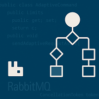

Advanced Usage – Adaptive Test Commands
Overview
This module enables adaptive communication with test programs using RabbitMQ. The typical flow includes:
- Constructing an
AdaptiveCommand. - Wrapping it in an
AdaptiveRequest. - Sending it using
AdaptiveCommunication.
Class Structure
AdaptiveCommand.cs
Represents the command to send adaptively to the test equipment.
public class AdaptiveCommand
{
public EnableWordAction? EnableWordAction { get; set; }
public TestStepAction? TestStepAction { get; set; }
public Limits? Limits { get; set; }
}
EnableWordAction.cs
public class EnableWordAction
{
public string EnableWordName { get; set; }
public EnableWordActionType ActionType { get; set; }
}
Limits.cs
public class Limits
{
public string TestInstanceName { get; set; }
public string ParamName { get; set; }
public double? Low { get; set; }
public double? High { get; set; }
}
AdaptiveRequest.cs
public class AdaptiveRequest
{
public AdaptiveRequestTarget RequestTarget { get; set; }
public AdaptiveCommand AdaptiveCommand { get; set; }
}
AdaptiveRequestTarget.cs
public class AdaptiveRequestTarget
{
public string LotId { get; set; }
public string TesterId { get; set; }
public string TestCell { get; set; }
}
AdaptiveCommunication.cs
public class AdaptiveCommunication : ObservableObjectLogging
{
public async Task SendAdaptiveRequestAsync(AdaptiveRequest request, CancellationToken token)
{
// Serialize to JSON and publish to RabbitMQ
}
}
Sequence Diagram
sequenceDiagram
participant User
participant DAS
participant AMP
User->>DAS: Create AdaptiveCommand
User->>DAS: Wrap in AdaptiveRequest
DAS->>AMP: Send via RabbitMQ
AMP-->>DAS: Acknowledge (optional)